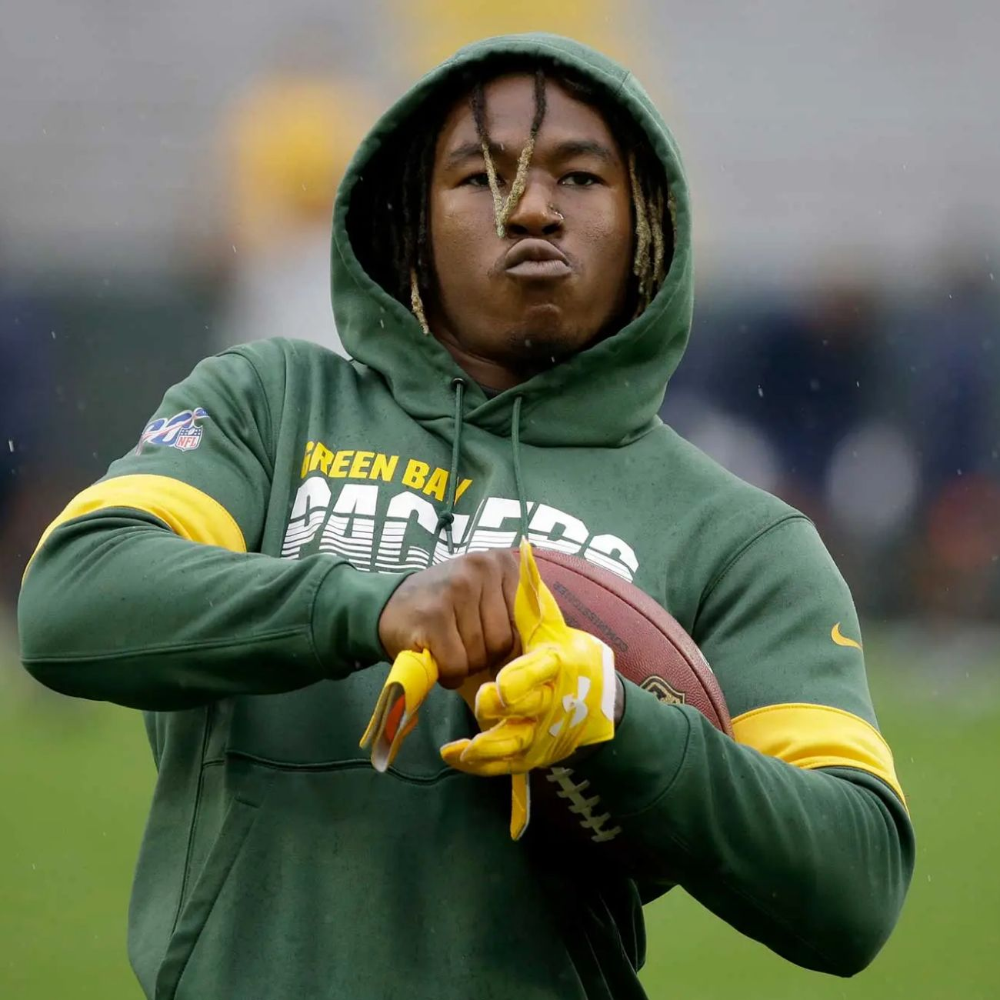
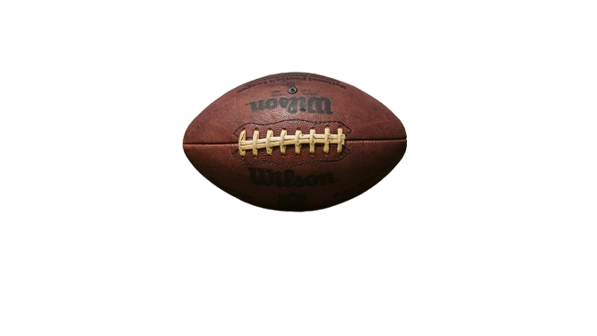

One of my biggest passion is American football. My favorite team are the Green Bay Packers, wearing golden green colors. This team represents Wisconsin. As a Texan, I'm oftenly asked why i support this team, and not a Texan team like the Houston Texans or the Cowboys. I also support the Dallas Cowboys, of course, but the Green Bay Packers are the ones that introduced me to this sport. When I discovered american football, my favorite player was a Packer, Jamaal Williams (Actively plays for the Detroit Lions.)

Jamaal Williams incarnates joy and good vibes. Before every game, he dances during the warmup, at interviews, he is funny and loving. This player trully has this warm and friendly mentality that we can find in this sport. A football team is welded, ready to destroy they opponant, honnor their University or their city. The video below is a perfect example of that family vibe but also warrior-like in a team.
In this video, they chant along "We ready for y'all". This phrase can be interpreted in two ways: A threatning message for the opposing team, but also a promise for the supporter of their team. What's beautyful in this song, it's that it is in the same time motivating, we can tell that the team is unified and determined to get that win, but the song also works as a fanfare to intimidate and prove that they shouldn't be underestimated. We can only imagine the pressure that the team in the next changing room must feel, a real pregame scaring.

So this is my passion, and why I like it so much. The ferocious and warrior-like aspect, the strong will to win as a team, to be proud of what we represent. It's also a friendly sport, that can be playing with your family, or your buddies. A sport that can unite crowds in front of a game, for generations, a sport that bonds.